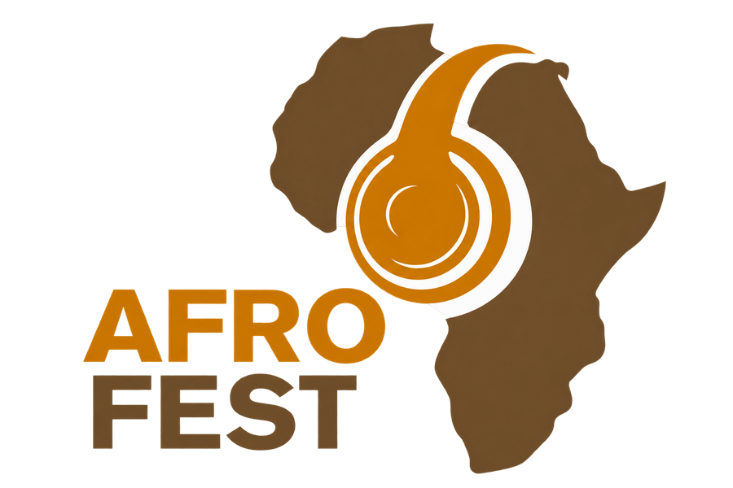

Missão
Promover cultura, ligação, empreendedorismo e cooperação através de uma plataforma africana contemporânea.

AFROFEST
Lusofonia sem fronteiras.
Uma plataforma africana contemporânea que promove cultura, ligação, empreendedorismo e cooperação — com ambição de valorizar a identidade africana no espaço lusófono.
Conhecer a AFROFESTA AFROFEST promove cultura, ligação, empreendedorismo e cooperação através de uma plataforma africana contemporânea.
A identidade institucional assenta em autenticidade, diversidade, inclusão, excelência, inovação, colaboração, respeito e impacto — com a ambição de valorizar a identidade africana no espaço lusófono.
Promover cultura, ligação, empreendedorismo e cooperação através de uma plataforma africana contemporânea.
Ser uma referência internacional na valorização da identidade africana no espaço lusófono.
A AFROFEST comunica com elegância, clareza e consistência. A sua identidade valoriza cultura, ligação, colaboração e respeito, afirmando a identidade africana no espaço lusófono e uma visão de lusofonia sem fronteiras.
Uma Língua.
Várias Culturas.
Lusofonia sem Fronteiras.